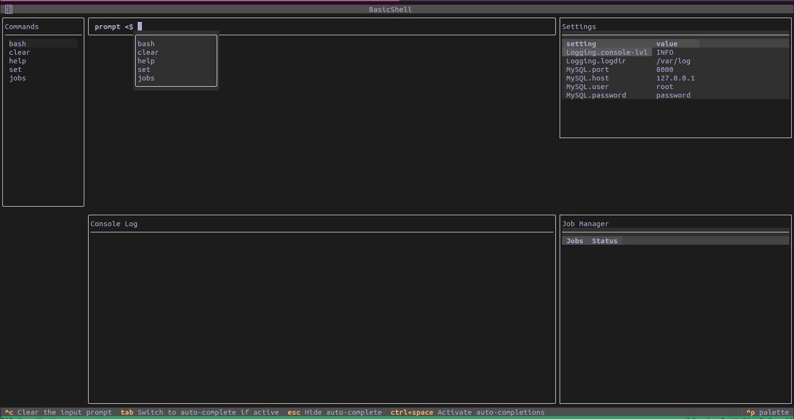

Textual Shell
Welcome to the Textual-Shell documentation! This is an addon for the Textual framework.

What is Textual-Shell?
It is a collection of widgets that can be used to build a custom shell application. It draws inspiration from the cmd2 and prompt-toolkit libraries.
Quick Start
Install it with:
Basic Shell
import os
from textual.app import ComposeResult
from textual.containers import Grid, Container
from textual.widgets import Header, Footer
from textual_shell.app import BaseShellApp
from textual_shell.commands import Bash, Clear, Help, Jobs, Python, Set
from textual_shell.widgets import (
Shell,
CommandList,
ConsoleLog,
JobManager,
SettingsDisplay,
)
from commands import Sleep, Timer
class BasicShell(BaseShellApp):
CSS = """
#app-grid {
grid-size: 3;
grid-rows: 1fr;
grid-columns: 20 2fr 1fr;
width: 1fr;
}
"""
theme = 'tokyo-night'
CONFIG_PATH = os.path.join(os.getcwd(), '.config.yaml')
cmd_list = [
Bash(), Clear(), Help(), Set(CONFIG_PATH),
Jobs(), Python(), Timer(), Sleep()
]
command_names = [cmd.name for cmd in cmd_list]
def compose(self) -> ComposeResult:
yield Header()
yield Footer()
yield Grid(
CommandList(self.command_names),
Shell(
self.cmd_list,
prompt='prompt <$ '
),
SettingsDisplay(self.CONFIG_PATH),
Container(),
ConsoleLog(self.CONFIG_PATH),
JobManager(),
id='app-grid'
)
if __name__ == '__main__':
BasicShell().run()
Below is an example config file. The descriptions are used by the help command. The Set command can be used to change these values. The SettingsDisplay widget will load the settings and the corresponding values into a DataTable widget.
.config.yml
Server:
description: An example server config.
host:
description: IP of the server.
value: 127.0.0.1
port:
description: The open port.
value: 8000
Logging:
description: Config for logging.
logdir:
description: The directory to write log files too.
value: /var/log/app
log_format:
description: The Format for the log records.
value: '\%(levelname)s\t\%(message)s'
TODO
- write documentation on Commands
- write documentation on shell key binds